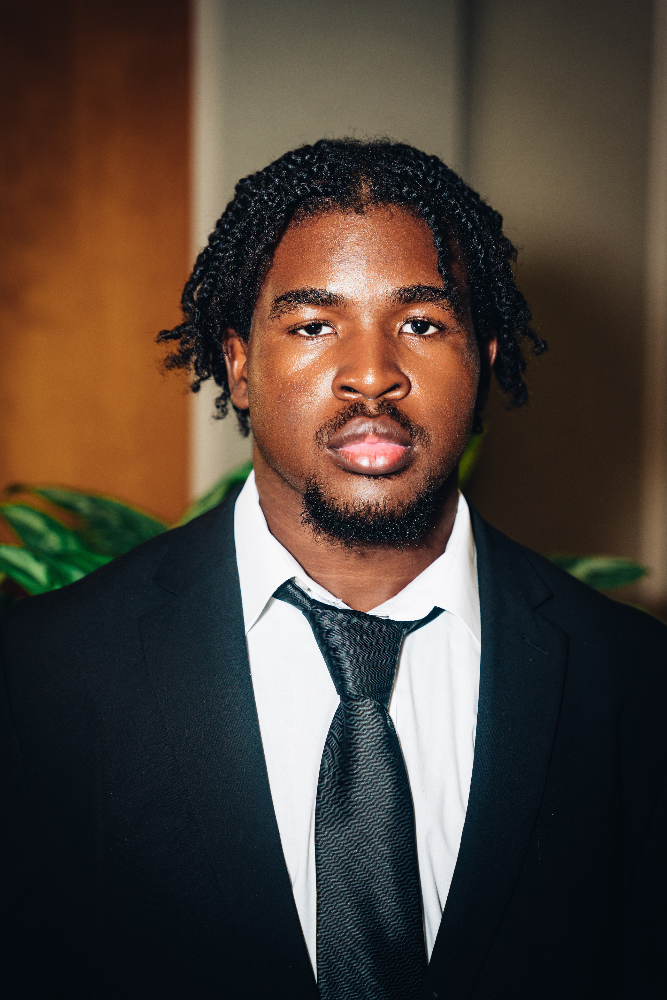

About Me
I'm a student at the University of Texas at Austin studying Computer Science.
I aspire to be a software engineer and I'm focused on full-stack development.

Skills: Python, Java, React
Leadership and Organizations:
- President of the Association of Black Computer Scientists
- Member of the National Society of Black Engineers
- Telecommunications Chair of the National Society of Black Engineers
- Member of the Heman Sweatt Center of Black Males